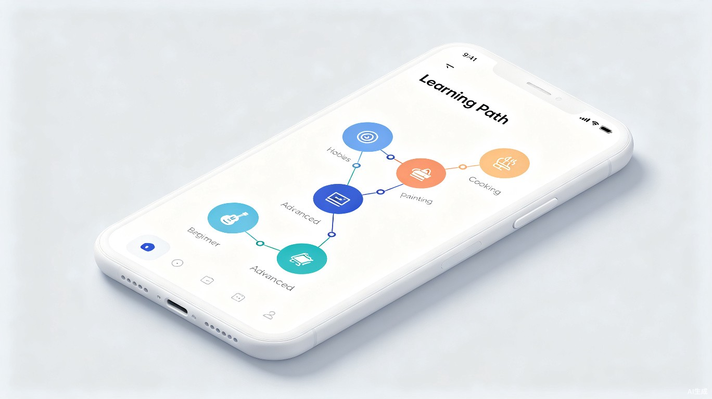
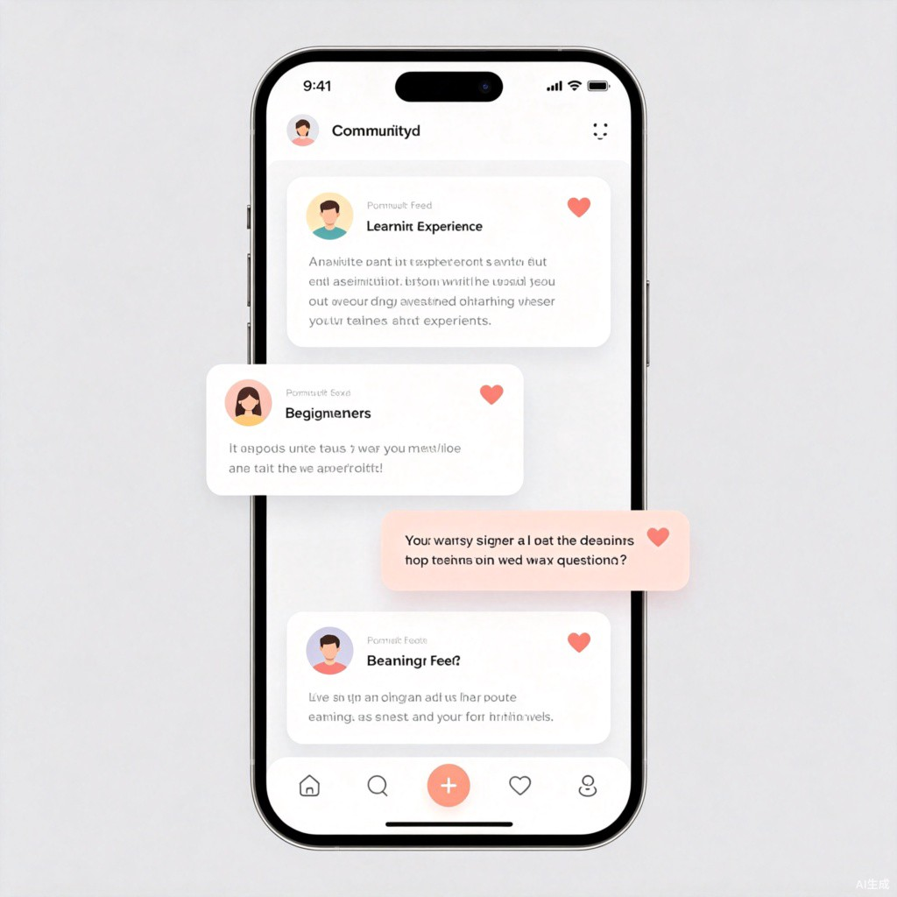

AI驱动的兴趣入门导航小程序 —— 让每一次好奇都有路可循，让每一个小白都能轻松启程
解决兴趣入门"最后一公里"问题的智能导航工具
灵感来源于创作者自身的真实经历：想要学习一项新技能时，搜索引擎返回的是海量的、碎片化的、质量参差不齐的信息。新手不仅需要筛选信息，还要先搞懂那些从未听说过的专业术语。一个能够将零散知识结构化、将专业术语平民化、将学习路径个性化的工具，是每一个自学者都需要的"引路人"。
兴趣启航是一款基于微信小程序的AI智能兴趣入门导航平台。它结合了AI个性化推荐、结构化知识图谱和UGC社区互动三大能力，为用户提供从"零基础"到"入门"的完整学习路径规划，并打造一个互助成长的学习社区。
精准定位"想学但不知从何开始"的泛人群
大学生、职场新人，对某个领域产生好奇但缺乏系统认知，需要一张"地图"指引方向
想要转行或拓展技能树的人，需要快速了解新领域的知识框架和关键概念
对某领域完全零基础，连基本术语都听不懂，需要最通俗的解释和最简单的起点
习惯通过网络自主学习的人，需要高质量、经过筛选的学习资源和路径
| 痛点类型 | 具体表现 | 影响 |
|---|---|---|
| 信息过载 | 搜索结果成千上万，不知哪个靠谱 | 浪费时间筛选，容易踩坑 |
| 术语壁垒 | 教程里全是看不懂的专业词汇 | 挫败感强，入门门槛极高 |
| 路径缺失 | 知识点零散，缺乏先后逻辑 | 学了后面忘了前面，效率低 |
| 无人答疑 | 遇到问题不知道该问谁 | 卡壳后容易放弃 |
| 缺少反馈 | 不知道自己学对了没有 | 学习动力不足，难坚持 |
从效率提升与社会价值双维度创造价值
将平均入门时间从数周缩短至数天。传统的兴趣入门需要用户在搜索引擎、视频网站、论坛之间反复横跳，筛选有效信息的时间远超实际学习时间。兴趣启航通过AI预筛选、结构化组织和个性化推荐，将信息获取成本降低80%以上。
AI一键生成学习路线，省去数小时信息筛选时间
术语百科+通俗解释，降低认知门槛，加速理解
最优学习顺序规划，避免知识断层和重复学习
社区问答+AI辅助，问题得到快速精准解答
从入门到社区，构建完整的学习闭环
用户选择或搜索兴趣领域后，AI根据用户当前水平（纯小白/略有了解/有一定基础）生成个性化学习路线图。路线图以可视化的"知识地图"形式呈现，包含：
首次进入系统时，用户进行自我评估：
类似小红书的轻量化社区，用户可以：
社区内容反哺AI推荐系统的核心机制：
从注册到分享，完整体验闭环
flowchart TD
A[用户注册/登录] --> B[选择兴趣领域]
B --> C{是否纯小白?}
C -->|是| D[进入小白科普模式]
C -->|否| E[选择当前掌握范围]
D --> F[AI生成入门路线]
E --> F
F --> G[可视化学习地图]
G --> H[按阶段学习]
H --> I{遇到疑问?}
I -->|是| J[社区发帖/搜索]
I -->|否| K[继续学习]
J --> L[社区互动解答]
L --> K
K --> M{完成阶段?}
M -->|否| H
M -->|是| N[分享学习心得]
N --> O[内容审核]
O --> P{优质内容?}
P -->|是| Q[纳入AI语料库]
P -->|否| R[普通展示]
Q --> S[优化后续推荐]
S --> T[新用户获得更好体验]
R --> T
核心界面视觉方案


微信小程序 + AI大模型 + 知识图谱
| 层级 | 技术选型 | 说明 |
|---|---|---|
| 前端 | 微信小程序原生 + Taro | 跨端兼容，快速迭代 |
| 后端 | Node.js / Go + GraphQL | 高并发社区场景 |
| 数据库 | PostgreSQL + Redis + Neo4j | 关系数据+缓存+知识图谱 |
| AI引擎 | LLM API + RAG | 路线规划+内容生成 |
| 搜索 | Elasticsearch | 社区内容全文检索 |
| 存储 | 腾讯云COS | 图片/视频资源存储 |
flowchart LR
subgraph 用户层
U1[新用户]
U2[老用户]
end
subgraph 社区层
C1[发帖分享]
C2[点赞/评论]
end
subgraph AI层
A1[内容质量评估]
A2[知识抽取]
A3[语料库更新]
A4[路线优化]
end
U1 --> C1
U2 --> C2
C1 --> A1
C2 --> A1
A1 --> A2
A2 --> A3
A3 --> A4
A4 --> U1